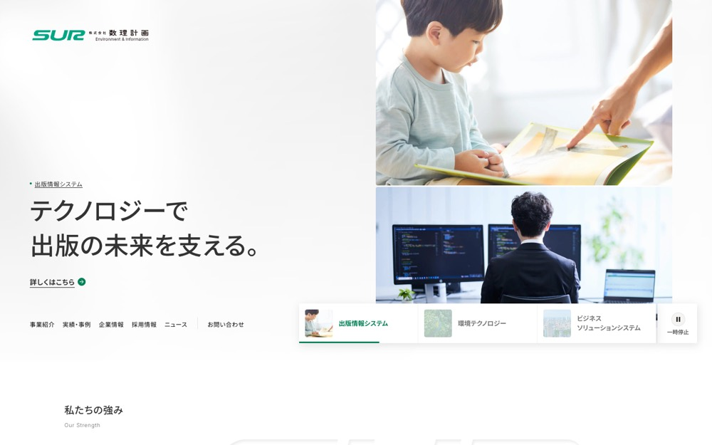

SUR 株式会社 数理計画 Environment&Information
#f5f4f2 の地に #02704c を大きな面で置く配色。影を使って浮かせる。本文 18px・行間 1.55、セクション間 120px。
配色
文字色は #333333 / #666666 / #ffffff / #999999。
どこに使っているか（箇所数）
| 色 | 面 | 文字 | 枠線 | ボタンの地 |
|---|---|---|---|---|
#f5f4f2 |
6 | 0 | 0 | 0 |
#ffffff |
22 | 20 | 0 | 7 |
#6b6c6b |
1 | 78 | 0 | 0 |
#026e4b |
4 | 0 | 0 | 3 |
#028057 |
5 | 3 | 5 | 5 |
#333333 |
0 | 69 | 0 | 0 |
#999999 |
0 | 20 | 0 | 0 |
#02704c は
文字
和文
Noto Sans JP欧文
Inter本文
18px / 行間 1.55この見本は Noto Sans JP で表示していますあのイーハトーヴォのすきとおった風
あのイーハトーヴォのすきとおった風
あのイーハトーヴォのすきとおった風
あのイーハトーヴォのすきとおった風
あのイーハトーヴォのすきとおった風
あのイーハトーヴォのすきとおった風
あのイーハトーヴォのすきとおった風
余白とかたち
| コンテンツ幅 | 1280px | |
|---|---|---|
| 読ませる段の幅 | 600px | |
| セクションの上下余白 | 120px | |
| 並びの間隔 | 6 / 8 / 20 / 24px | |
| 角丸 | 0px（大きな面は 4px） | |
| 影 | rgba(51, 51, 51, 0.12) 2px 4px 16px 1px | |
| 画面幅の切り替え | 1024 / 782 / 768 / 767 / 600px |
ボタン
お問い合わせ
#028057 / 14px / 500 / 角丸 4px
もっと見る
transparent / 14px / 500 / 角丸 0px
もっと見る
transparent / 14px / 500 / 角丸 4px
ページの組み立て
上から順に、実際に並んでいたセクション。高さの比率もそのまま。
1
ヒーロー（画像）
700px
2
1カラム・画像あり
780px
3
3カラム・画像あり
1440px ・ #f5f4f2
4
6カラム・画像あり
1440px
5
6カラム・画像あり
760px ・ #f5f4f2
6
6カラム・画像あり
680px ・ #f5f4f2
7
1カラム・画像あり
1040px ・ #f5f4f2
全7セクション、すべて全幅。
面と、その上に置く線・文字
| 面 | 使用箇所 | 線と文字 |
|---|---|---|
#f5f4f2 |
6 | #02704c |
#ffffff |
4 | #02704c |
#026e4b |
1 | #666666 |
#6b6c6b |
1 | #666666 |
線と文字の色は固定ではなく、乗っている面で入れ替える。
部品
同じ形が 2 箇所。角丸 4px ／ 影なし
タグ
角丸 4px ／ 13px
PCとスマホ
同じサイトを390px幅で測り直した値。
| PC 1440px | スマホ 390px | |
| 本文 | 18px / 行間 1.55 | 16px / 行間 1.55 |
| 見出し | 28px | 20px |
| セクションの上下余白 | 120px | 40px |
| 左右の余白 | — | 60px |
| 並びの間隔 | 20px | 18px |
文字サイズの段は 16 / 14 / 13 / 12 / 10px。セクション余白はPCの33%まで詰める。
画像
3:2・54枚
1:1・3枚
67枚。うち 3 枚は画面いっぱいに置く。角丸 4px。